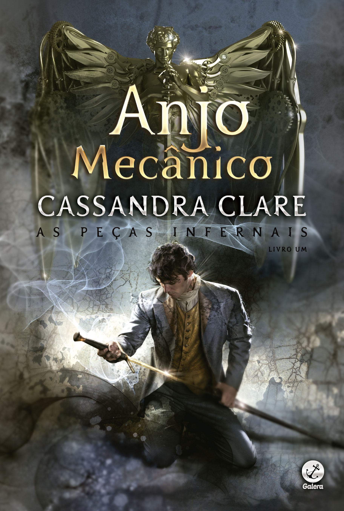
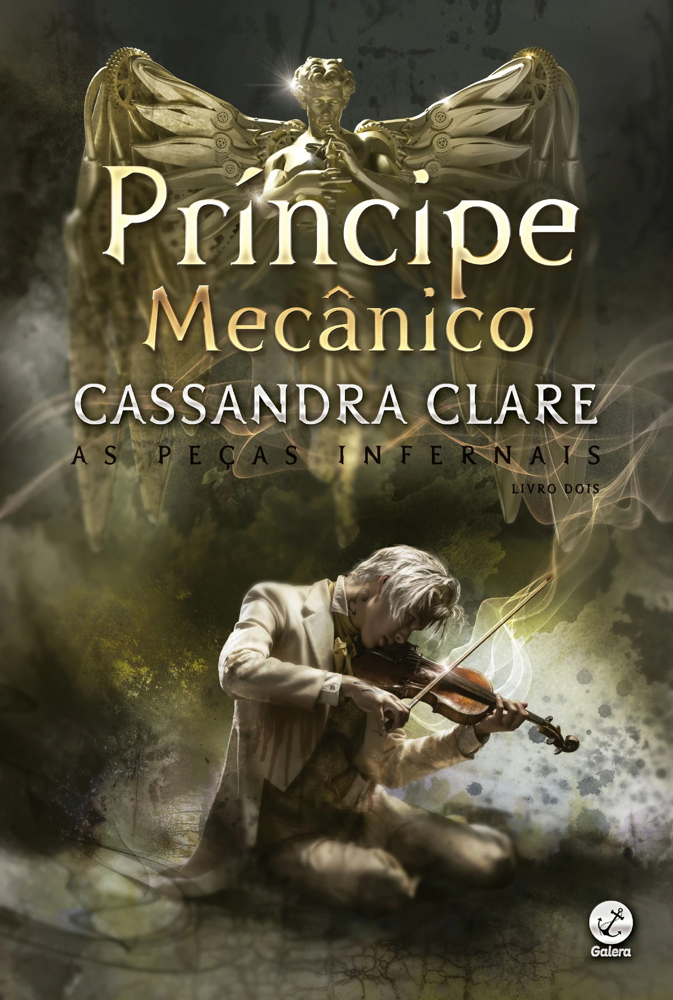
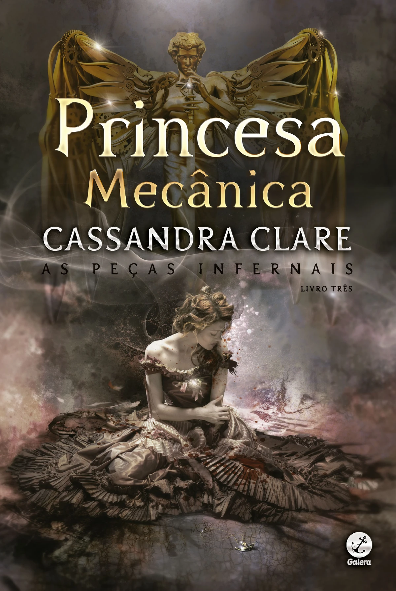
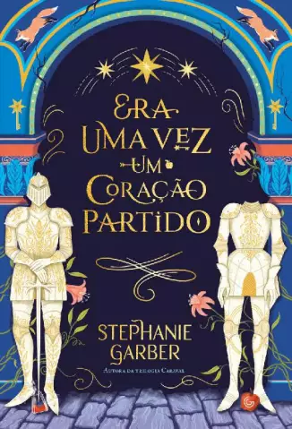
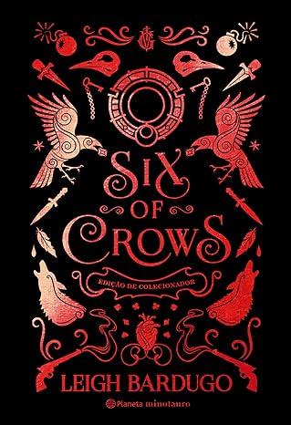
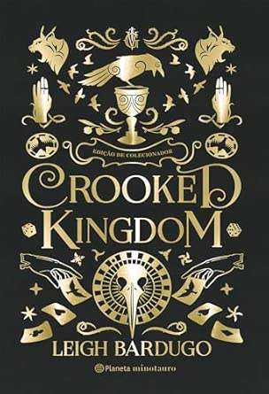
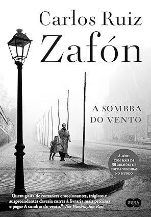
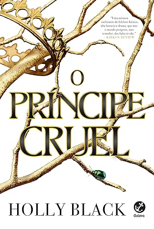
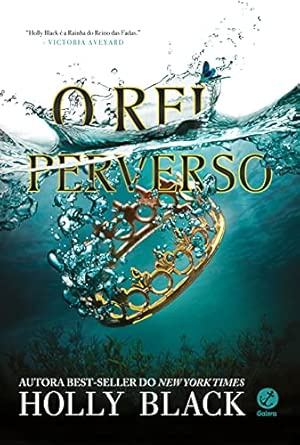

Lendo
Anjo Mecânico
Gênero : Fantasia, Romance.
Número de páginas : 392.
Sinopse : Tessa Gray tem apenas 16 anos e, mesmo parecendo ser uma mocinha indefesa, precisa cruzar o oceano de Nova York à Londres vitoriana para encontrar o irmão mais velho. Com a morte da tia Harriet, ela não tem outra escolha senão ir morar com Nathaniel, o único parente vivo. Porém, após ser imediatamente sequestrada pelas irmãs Black e Dark - duas senhoras nada simpáticas que também mantêm Nathaniel em cativeiro - Tessa é logo resgatada pelos Caçadores de Sombras, encontrando abrigo no Instituto de Londres. Do lado de fora do Instituto está se desenrolando uma ver dadeira caçada em seu nome pelo seu cobiçado poder, e o Magistrado fará qualquer coisa para tê-la sob seu domínio. Com a ajuda de bizarras máquinas humanoides, os autômatos, o novo líder das forças do mal em Londres se infiltrará na cidade, nos becos do submundo e em todo o caminho, até alcançar o coração dos Caçadores de Sombras. Junto ao temperamental e misterioso Will e seu melhor amigo James, cuja frágil beleza esconde um terrível segredo, Tessa vai aprender a usar seu poder e conquistar um lugar ao lado deles na batalha. Tudo isso para tentar descobrir quem é o Magistrado e qual é a origem de sua habilidade sobrenatural. E sem que ela se esqueça, é claro, de tentar controlar a atração que sente pelos dois garotos. Afinal, muitas vezes o amor é mais poderoso do que qualquer magia.
Quero ler
Príncipe Mecânico
Gênero : Fantasia, Romance.
Número de páginas : 406.
Sinopse : Mesmo devidamente estabelecida em Londres, Tessa ainda não sabe bem qual é seu lugar no mundo. Viver junto aos Caçadores de Sombras, sob o teto do Instituto controlado por Charlotte, lhe trouxe mais perguntas do que respostas. Tudo que sabe é que sua vida agora está diretamente ligada aos propósitos dos Nephilim e, quando forças inimigas dentro da Clave ameaçam afastar Charlotte do seu posto, Tessa teme pelo próprio futuro. Benedict Lightwood, apenas um dentre os traidores que rondam o Instituto de Londres, está mais interessado do que nunca em assumir o poder. Essa possibilidade coloca a todos numa corrida contra o tempo, em que Charlotte precisa deter Mortmain para provar que é capaz de manter o Submundo sob controle. Não bastassem todos esses problemas, Tessa está cada vez mais vulnerável à corda bamba entre Will e Jem. O comportamento autodestrutivo do primeiro praticamente a empurra em direção ao segundo. Quanto mais próxima de Jem permanece Tessa – sentindo-se pela primeira vez segura e amada nos braços de alguém –, mais percebe uma força oculta puxando-a de volta para Will. Talvez fosse mais simples se entregar a Jem se Will não estivesse começando a dar estranhos sinais de mudança. E se até mesmo o surgimento de um novo Will é possível, fica difícil imaginar quais as surpresas que os projetos de Mortmain lhes reservam. Enquanto a perigosa busca pelo Magistrado e pela verdade conduz os três ao perigo, Tessa vai descobrir que, juntos, o amor e a mentira são capazes de corromper até o mais puro dos corações.
Princesa Mecânica
Gênero : Fantasia, Romance.
Número de páginas : 336.
Sinopse : Tessa Gray devia estar feliz. Todas as noivas não o são? No entanto, ao se preparar para o casamento, uma rede de intrigas e perigos começa a envolver os Caçadores de Sombras do Instituto de Londres. Um novo demônio surge... ligado, por sangue e segredo, a Mortmain e à cruzada deste para destruir a humanidade e seus guardiões celestes. O Magistrado precisa apenas de um último item para libertar o caos. Um último detalhe para legar a seu exército de autômatos, as Peças Infernais, a invencibilidade. Ele precisa de Tessa. Enquanto Jem e Will, ambos com direitos iguais ao coração de Tessa, Charlotte Branwell, líder do Instituto, e o feiticeiro Magnus Bane trabalham juntos para salvar Tessa e todos os Caçadores de Sombras, a menina percebe que somente ela tem a chave para sua liberdade. Pois, com a descoberta de sua real natureza, Tessa pode se tornar mais poderosa do que até ela mesma imagina. Mas pode apenas uma garota, mesmo uma com o poder do Anjo, vencer um exército inteiro? Perigo e traição. Segredos, encantamen tos e redenção
Era uma vez um coração partido
Gênero : Fantasia, Romance.
Número de páginas : 352.
Sinopse : Criada na loja de antiguidades de seu querido pai, cercada por lendas de seres poderosos e imortais, Evangeline Raposa cresceu acreditando em histórias de amores verdadeiros e em finais felizes. Mas essas crenças se veem abaladas quando a jovem descobre que o amor de sua vida está prestes a se casar com outra pessoa. Seu desespero é tamanho que ela aceita fazer um acordo com o charmoso e perverso Príncipe de Copas, famoso por seu poderio mítico. Dizem que seu beijo é tão encantador que vale a pena morrer por ele, e é justamente isso que o príncipe pede em troca: três beijos de Evangeline a serem dados no momento e no local escolhidos previamente. Logo, Evangeline descobre que negociar com um imortal é um jogo muito perigoso. Afinal, o Príncipe de Copas quer muito mais dela do que apenas beijos. Ele tem outros planos para a jovem, e tais intenções podem tanto se tornar o tão sonhado “felizes para sempre” quanto a mais requintada tragédia.
Lidos
Six of Crows
Gênero : Fantasia
Número de páginas : 448
Sinopse : Ketterdam é uma cidade agitada, onde o comércio nunca para e tudo tem um preço… se você puder pagar. Ninguém entende isso melhor do que Kaz Brekker, um gênio do crime. Quando surge a oportunidade de executar um assalto arriscado que pode torná-lo mais rico do que jamais imaginou, ele sabe que não pode fazer isso sozinho. Então, ele reúne a equipe perfeita: Um prisioneiro sedento por vingança. Um atirador que nunca recusa uma aposta. Uma fugitiva com um passado privilegiado. Uma espiã fantasma. Uma Sangradora Grisha que usa sua magia para sobreviver. Um ladrão com talento para fugas impossíveis. Seis foras da lei. Um assalto impossível. E a equipe de Kaz pode ser a única coisa entre o mundo e a destruição. Isto é, se não se matarem antes.
"Sem luto. Sem funerais"
"Eu protejo meus investimentos."
"Melhor verdades terríveis do que mentiras gentis."
Crooked Kingdom
Gênero : Fantasia
Número de páginas : 528
Sinopse : Kaz Brekker e sua equipe acabaram de realizar um assalto tão ousado que nem eles acreditavam que sairiam vivos. Mas, em vez de aproveitarem a recompensa, agora estão lutando por suas vidas. Traídos e enfraquecidos, estão sem dinheiro, sem aliados e sem saída. Enquanto forças poderosas do mundo todo chegam a Ketterdam para desvendar os segredos de uma droga perigosa, velhos rivais e novos inimigos desafiam a inteligência de Kaz e testam a lealdade do grupo. Nas ruas escuras e traiçoeiras da cidade, uma guerra está prestes a explodir―uma batalha por vingança e redenção que pode mudar o destino do mundo Grisha para sempre.
"Vou te contar um segredo, Hanna. Os monstros realmente maus nunca se parecem com monstros."
A sombra do vento
Gênero : Mistério, Drama, Romance
Número de páginas : 464
Sinopse : Barcelona, 1945. Daniel Sempere acorda na noite de seu aniversário de onze anos e percebe que já não se lembra do rosto da falecida mãe. Para consolá-lo, o pai leva o menino pela primeira vez ao Cemitério dos Livros Esquecidos. É lá que Daniel descobre A sombra do vento, romance escrito por Julián Carax, que logo se torna seu autor favorito, sua obsessão. No entanto, quando começa a buscar outras obras do escritor, Daniel descobre que alguém anda destruindo sistematicamente todos os exemplares de todos os livros que Carax já publicou, e que o que tem nas mãos pode muito bem ser o último volume sobrevivente. Junto com seu amigo Fermín, Daniel percorre a cidade, adentrando as ruelas e os segredos mais obscuros de Barcelona. Anos se passam e sua investigação inocente se transforma em uma trama de mistério, magia, loucura e assassinato. E o destino de seu autor favorito de repente parece intimamente conectado ao dele.
"Há prisões piores que as palavras."
O príncipe cruel
Gênero : Fantasia
Número de páginas : 322
Sinopse : Jude tinha apenas sete anos quando seus pais foram brutalmente assasinados e ela e as irmãs levadas para viver no traiçoeiro Reino das Fadas. Dez anos depois, tudo o que Jude quer é se encaixar, mesmo sendo uma garota mortal. Mas todos os feéricos parecem desprezar os humanos... Especialmente o príncipe Cardan, o mais jovem e mais perverso dos filhos do Grande Rei de Elfhame. Para conquistar o tão desejado lugar na Corte, Jude precisa desafiar o príncipe - e enfrentar as consequências do ato. A garota passa, então, a se envolver cada vez mais nos jogos e intrigas do palácio, e acaba descobrindo a própria vocação para trapaças e derramamento de sangue. Mas quando uma traição ameaça afogar o Reindo das Fadas em violência, Jude precisará arriscar tudo em uma perigosa aliança para salvar suas irmãs - e a própria Elfhame. Cercada por mentiras e pessoas que desejam destruí-la , Jude terá que descobrir o verdadeiro significado da palavra poder antes que seja tarde demais.
"Se você me machucasse, eu não choraria. Eu machucaria você também."
Música que combina com o livro.O rei perverso
Gênero : Fantasia
Número de páginas : 308
Sinopse : Para sobreviver no Reino das Fadas, Jude Duarte precisou aprender muitas lições. A mais importante delas veio de seu padrasto: o poder é bem mais fácil de adquirir do que de manter. Ela achou que, depois de enganar Cardan para que ele jurasse obedecê-la por um ano e um dia, sua vida se tornaria mais fácil. Agora, Cardan é o Grande Rei. Judé é a mão por trás do trono. Cinco meses já se passaram, e ela não conseguiu fazer nada além de dar algumas ordens banais ao rei. Se quiser guardar o trono para seu irmão, Jude precisará pensar, e rápido, num plano para fazer Cardan se curvar a ela por mais tempo. Mas ter qualquer influência sobre o Grande Rei de Elfhame parece uma tarefa impossível, principalmente quando ele faz de tudo em seu poder para humilhá-la e prejudicá-la, mesmo que seu fascínio pela garota humana permaneça intacto. Como se não bastasse, as ondas ameaçam engolir as ilhas de Elfhame e Jude recebe um alerta: alguém traiu você. Mas quem? Jude precisa lutar para salvar a própria vida e a daqueles que ama, além de lutar contra seus sentimentos conflituosos por Cardan. Em um mundo imortal, um ano e um dia não são nada...
"Não tem nada mais doce - diz ele beijando o dorso da minha mão - do que aquilo que é escasso."
A rainha do nada

Gênero : Fantasia
Número de páginas : 294
Sinopse : Ele será a destruição da coroa e a ruína do trono. O poder é mais fácil de adquirir do que de manter. Jude aprendeu a lição mais difícil de sua vida quando abdicou do controle do Rei Cardan em troca de um poder imensurável. Agora, ela carrega o outrora impensável título de Grande Rainha de Elfhame, mas as condições são longe de ser ideais. Exilada por Cardan no mundo mortal, Jude se encontra impotente e frustrada enquanto planeja reivindicar tudo que Cardan tomou dela. A oportunidade surge com sua irmã gêmea, cuja vida está em perigo. Para salvá-la de uma situação tenebrosa envolvendo Locke, Jude decide voltar ao Reino das Fadas se passando por Taryn. Antes disso, porém, ela precisa confrontar os próprios sentimentos contraditórios pelo rei que a traiu. No entanto, ao voltar a Elfhame, Jude constata que tudo mudou. A guerra está prestes a eclodir, e ela caminha próximo a seus inimigos. Será que ela vai ser capaz de resgatar a Coroa e o amor incondicional de Cardan, ao mesmo tempo que destrói os planos de seus inimigos? Ou será que tudo está perdido para sempre?
"O amor é uma idiotisse. A gente só parte o coração da outra pessoa."
A biblioteca da meia noite

Gênero : Ficção Científica
Número de páginas : 308
Sinopse : Aos 35 anos, Nora Seed é uma mulher cheia de talentos e poucas conquistas. Arrependida das escolhas que fez no passado, ela vive se perguntando o que poderia ter acontecido caso tivesse vivido de maneira diferente. Após ser demitida e seu gato ser atropelado, Nora vê pouco sentido em sua existência e decide colocar um ponto final em tudo. Porém, quando se vê na Biblioteca da Meia-Noite, Nora ganha uma oportunidade única de viver todas as vidas que poderia ter vivido. Neste lugar entre a vida e a morte, e graças à ajuda de uma velha amiga, Nora pode, finalmente, se mudar para a Austrália, reatar relacionamentos antigos – ou começar outros –, ser uma estrela do rock, uma glaciologista, uma nadadora olímpica... enfim, as opções são infinitas. Mas será que alguma dessas outras vidas é realmente melhor do que a que ela já tem? Em A Biblioteca da Meia-Noite, Nora Seed se vê exatamente na situação pela qual todos gostaríamos de poder passar: voltar no tempo e desfazer algo de que nos arrependemos. Diante dessa possibilidade, Nora faz um mergulho interior viajando pelos livros da Biblioteca da Meia-Noite até entender o que é verdadeiramente importante na vida e o que faz, de fato, com que ela valha a pena ser vivida.
"Não é aquilo que você olha que importa, o que você vê."
Sobre mim
Laura Knoll tem 20 anos, é estudante do 6º período de Engenharia da Computação na UTFPR e não sabe bem o que vai fazer da vida.
Quando não está estudando (o que ela faz o tempo todo), se dedica a :
Fazer musculação (na força do ódio).
Consumir conteúdo de arte mais do que de fato produzir.
Ler livros (especialmente de romance e fantasia, mas outros gêneros são aceitos também).
Assistir filmes e séries (os mais famosinhos da Netflix).
Estudar alemão (Hilfe).